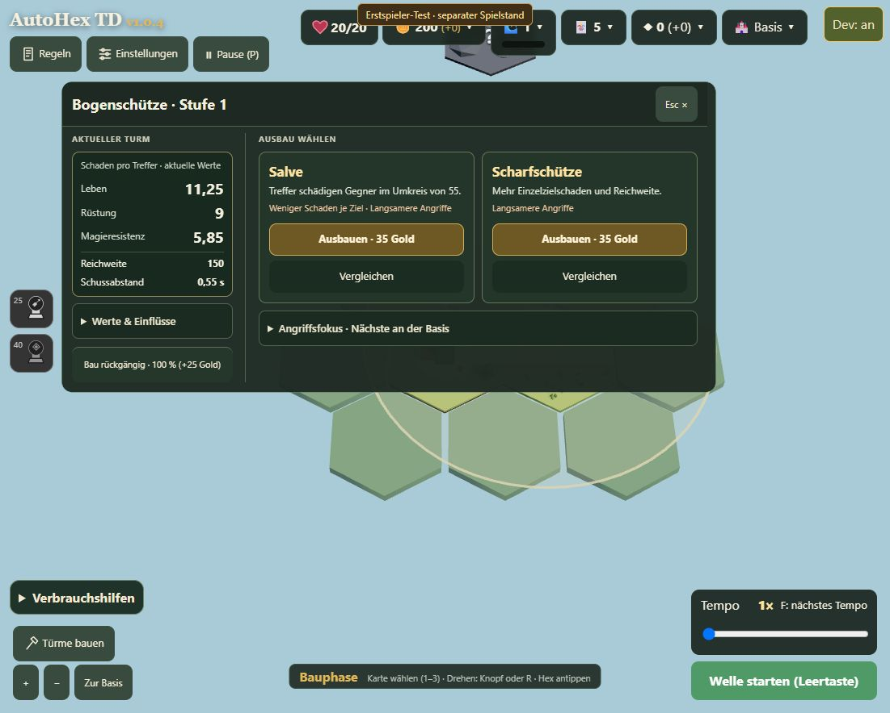
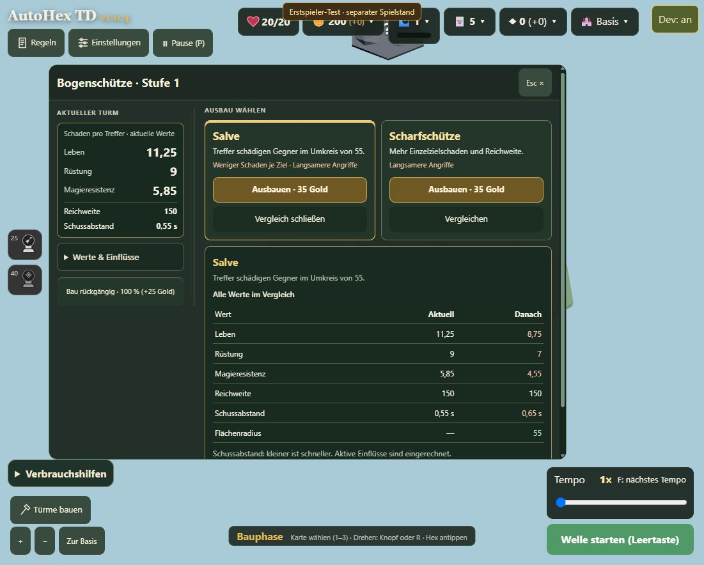
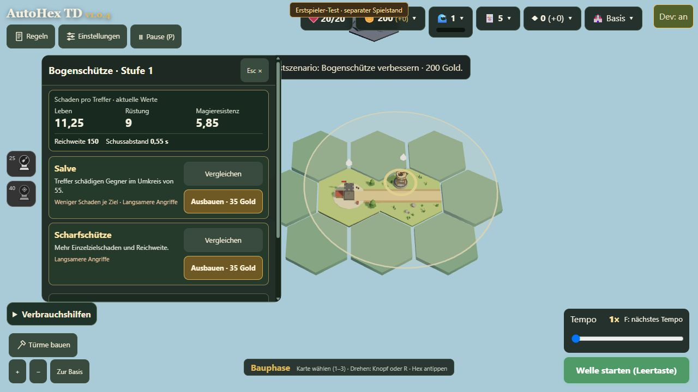

AutoHex TD · Turmansicht · Variante 2 · 17.10.2026
Drei Referenzen, eine zweite umgesetzte Variante
Die Referenzen zeigen unterschiedliche Möglichkeiten, Turmwerte, Ausbau und Verkauf zu organisieren. Übernommen werden Anordnungsprinzipien. Grafiken und Spielmechaniken der anderen Spiele werden nicht ins Spiel kopiert.
1 · Bloons TD 6
 Screenshot aus dem Steam-Guide Winter Park CHIMPS. Extern eingebunden, Rechte bei den jeweiligen Urhebern.
Screenshot aus dem Steam-Guide Winter Park CHIMPS. Extern eingebunden, Rechte bei den jeweiligen Urhebern.
Beobachtung: Zielmodus, mehrere Ausbaupfade, Preise und Verkaufswert werden in einem festen Turmpanel gebündelt. Ableitung: Jeder Ausbau erhält einen klar abgegrenzten Bereich mit eigener Aktion und eindeutigem Zustand.
2 · Kingdom Rush: Vengeance
 Screenshot aus einem TapTap-Guide zu Kingdom Rush: Vengeance. Extern eingebunden, Rechte bei den jeweiligen Urhebern.
Screenshot aus einem TapTap-Guide zu Kingdom Rush: Vengeance. Extern eingebunden, Rechte bei den jeweiligen Urhebern.
Beobachtung: Aktionen erscheinen am ausgewählten Turm; die Informationen dazu stehen in einem getrennten unteren Bereich. Ableitung: Aktuelle Turmwerte und Kaufaktionen bekommen voneinander getrennte, verlässliche Plätze. Ein Radialmenü wird nicht übernommen: Die präzisen Schadenswerte und bis zu drei Ausbauzweige brauchen bei AutoHex TD mehr Raum.
3 · Defense Grid 2
 Screenshot aus dem Defense-Grid-2-Test von Windows Central. Extern eingebunden, Rechte bei den jeweiligen Urhebern.
Screenshot aus dem Defense-Grid-2-Test von Windows Central. Extern eingebunden, Rechte bei den jeweiligen Urhebern.
Beobachtung: Informationen und kompakte Aktionen sind nebeneinander angeordnet. Ableitung: Eine horizontale Aufteilung ist eine sinnvolle Alternative zum langen, schmalen Panel.
Die Screenshots dokumentieren konkrete Spielsituationen und sind keine vollständige Funktionsanalyse dieser Spiele. Falls ein externer Bildserver die Einbettung blockiert, führt der jeweilige Quellenlink zum Originalartikel.
Umgesetzt: Variante 2

Eigene Aufnahme der tatsächlichen Umsetzung im isolierten lokalen Testprofil.
Links bleiben Leben-, Rüstungs- und Magieresistenz-Schaden, Reichweite und Angriffstakt sichtbar. Darunter stehen Detailinformationen und Verkauf. Rechts stehen die Ausbauwege nebeneinander. Der vollständige Vergleich öffnet sich unter den Optionen; die ausgewählte Option wird hervorgehoben. Ein Wechsel zum anderen Vergleich kauft nichts.

Vergleich mit unveränderten und geänderten Werten. Auf knappen Spielflächen ist der Detailbereich scrollbar.
| Variante 1 | Variante 2 |
|---|
| Anordnung | Schmales Panel, Ausbaukarten untereinander | Breiteres Panel, Werte links, Ausbaukarten nebeneinander |
| Vergleich | Ersetzt die Ausbauauswahl | Öffnet unter der Auswahl; andere Pfade bleiben erreichbar |
| Stärke | Mehr freie Spielfläche in der Breite | Ausbaualternativen lassen sich leichter nebeneinander lesen |
| Abwägung | Mehr vertikales Scrollen | Mehr überdeckte Spielfläche; Details können weiterhin Scrollen erfordern |
| Git-Branch | codex/tower-view | codex/tower-view-v2 |
Variante 1 zum Vergleich

Frühere Aufnahme; die Fenstergrößen unterscheiden sich. Für eine abschließende Entscheidung beide Varianten am selben Fenster prüfen.
509 automatisierte Tests bestanden. Nach der abschließenden Beschriftungsänderung bestanden zusätzlich alle 17 gezielten Turmansicht- und Übersetzungstests. Standardansicht und geöffneter Vergleich wurden im Browser mit separatem Testprofil geprüft. Eine vollständige manuelle Prüfung aller Türme und Bildschirmgrößen ist damit nicht abgedeckt.
Isolierte lokale Vorschau öffnen · Keine Änderungen an Einstellungen oder Arsenal. Kein Push oder Release.